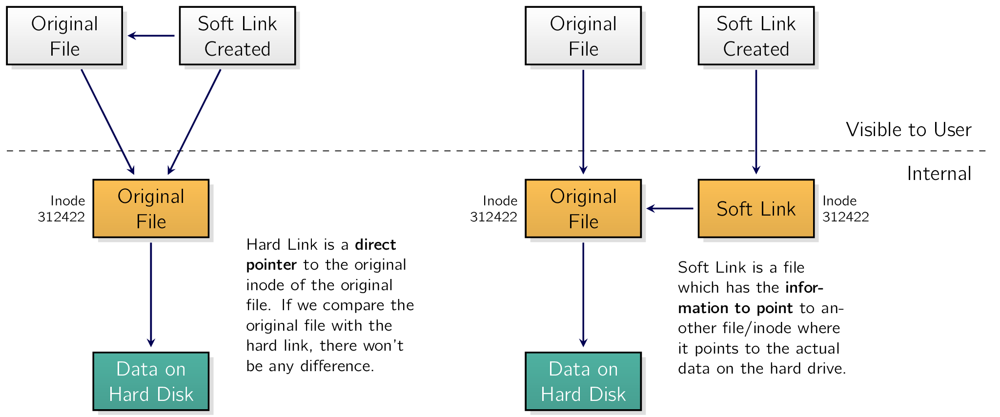

Linux is a multi-user environment. Now, what this means is that multiple users can use the OSOperating SystemOperating System. This is a concept we’re familiar with nowadays but was a new idea in the 1960s when UNIX came on the scene when it was mostly used by specialized engineers and programmers. In principle a person can have a user, someone else can have a user in the same OSOperating SystemOperating System, but our files are kept separate in our individual home folders.
- ¶
- command: su [options] [-] [user|UID [argument...]]
Run a command with substitute user and group ID.
- ¶
- command: sudo, sudoedit [OPTIONS]
Execute a command as another user.
We can create files only one or another user can access. At the command line, we can switch between
users with the su command, which is variously referred to as set user, switch user, or substitute
user.
To use su , we write the command followed by the name of the user we want to switch to. Probably the
most common use of switching users at the command line is to do some system administration tasks.
There are two (2) basic user roles in Linux.
-
There’s the normal user, and
-
The superuser.
The difference here is one of privilege.
The normal user can modify, create, delete, and move their own files, but they can’t make changes to the system.
They can’t install software, they can’t make changes to system files, and generally speaking, they can’t browse other users’ home folders.
The superuser, which is called root , can make changes to the system. It can install software, it can start
and stop services, and so on. Normal users can be granted the ability to temporarily use root’s power
through a command called sudo . It’s uncommon and it’s really bad practice to log into the root user
directly to do normal work.
On many systems, the root user is actually disabled and can’t be logged into.
The idea is that we only want to borrow root’s power when we really need it, so let’s take a look at that. Let’s try to see what’s inside root’s home folder, which is located at the root of the drive. These are two different meanings of the word root, which can be a little confusing.
- i.
- When we’re talking about a file system, the root is at the highest level of the organizational structure and that’s represented by a single slash.
- ii.
- When we’re talking about accessing users, root is the superuser.
Let’s see what happens when we write ls /root , and we can see we are denied permission.
bash
ls: cannot open directory '/root': Permission denied
We need to use the sudo command to gain root’s privileges to see inside there. This command basically
tells the system to run whatever command is after it with superuser privileges instead of the normal
user’s privileges. So, write sudo ls /root . I’m prompted for my password. This is a good sign that the computer
understood that I want superuser privileges.
While it is not recommended, Linux gives you options to do anything and this includes removing
user password from the computer. This would allow you to run sudo commands without ever
be. You start first use the passwd command to delete the password of the user (which is you)
bash
After entering you username in place of username , if you see password expiry information changed in the output, the password has been
deleted successfully and now you can do all superuser actions without the need of a password.
At a first glance, file permissions can seem rather cryptic as these were devised when every key stroke mattered. We’ve seen them before when listing files in a directory but it’s not immediately clear what they mean.
For example, rwxr-xr-x might not make any sense right now, but hopefully after this section you will have a
working understanding of the file permission system in Linux. The sequence of letters breaks down into
three (3) groups:
- i.
- The First represents the user, or the owner of the file,
- ii.
- Second group of three represents the group that owns the file,
- iii.
- Third group represents all other users not in the group that owns the file.
Each of the groups of three breaks down into three individual letters, which stand for
- Read
-
someone can see the contents of a file but not modify it,
- Write
-
someone can make a change to the file, but not read the contents,
- eXecute
-
someone can run the file, for example, a program or script, without loading it into another program first.
There are a couple of other letters you may see and hear, but R, W, and X will take care of what we need to do for now.
We can change the permissions of a file using the chmod command which changes the file mode bits on a file,
and there are two (2) ways to do it.
- 1.
- use octal notation, which uses three values to represent read, write, and execute.
- 2.
- use symbolic notation, which uses a shorthand for user, group, others, and all, an operator, and a list of permissions to change.
We’ll take a look at both, starting with the octal notation.
chmod Command A shell command for changing access permissions and special mode flags of files (including special files such as directories). The name is short for change mode where mode refers to the permissions and flags collectively
Octal Notation
If you ever have worked with Linux or macOS or any other UNIX based OS you may have seen
commands like chmod 777 , or chmod 644 , and similar things. The way we arrive at those numbers is by assigning read, write, and execute
each a different value. Which can be seen in Tbl. 7.1.
This notation makes it easy to represent different states of these three (3) values with just a single digit.
So if a user can read, write and execute, that comes out to seven (7 ), four plus two plus
one (4+2+1 ). If the group can only read and execute, that comes out to five (5 ), four plus one (4+1
).
With this system and a some basic maths, it’s impossible to be ambiguous about the permissions the user, group or others have.
If you don’t feel like doing the maths, you can make up a table like you in Tbl. 7.2.
| Octal | 0 | 1 | 2 | 3 | 4 | 5 | 6 | 7 |
| Binary | 000 | 001 | 010 | 011 | 100 | 101 | 110 | 111 |
| Mode | --- | --x | -w- | -wx | r-- | r-x | rw- | rwx |
To view the privileges a file has one simply has to write
Symbolic Notation
The symbolic way of representing permissions is a more approachable method to a lot of people,
because instead of setting numbers for each value, you can add or remove a permission by letter. User is
represented by the letter u , group by g , others by o , and changing all of the values is represented by a . If
you leave off a prefix, chmod applies your change to all values. There are three operators here you can
use:
Plus
(+
) | adds whichever permission you specify to what’s already there |
Minus
(-
) | removes whatever is there |
Equals
(=
) | sign resets the permissions to only whatever value you specify |
For example, to set user permissions to read, write and execute, we need to use:
bash
If we wanted to set group (g ) permissions to only read (r ), then we use:
bashchmod g=r
and to remove read, write and execute from others, write:
bash
We can line up the octal and symbolic values and see what the results are. In octal, 777 is the same as
saying a+rwx . 755 is the same as saying u+rwx , g=rx , o=rx . You can see the symbolic notation is a bit longer, but it contains
more information and context, so it’s a little easier to work with. The nice thing about symbolic
notation is that it’s a little easier to make changes, since you’re specifying what to change rather than
what octal value to use. Using octal notation is kind of like using the = operator in symbolic notation
all the time. Saying whatever was there before, now it’s this value, rather than add read or remove
execute.

It is time to look at a special kind of file on the Linux system called link. These are basically files which are references to other files, and they’re used to avoid having multiple copies of the same file in different places. [184] It is always in your best interest to minimise the number of copies a file has as the maintenance of all these files would not be possible after some time. The idea is simple:
As we’re learning about the CLICommand-Line InterfaceA software mechanism you use to interact with your operating system using your keyboard we may NOT have a need to create links, but it’s important to know what they are when you come across them, and can show their usefulness as we develop more complex applications. To put it simply, there are two (2) kinds of links:
- hard links
-
point to data on the disk,
- Soft or symbolic links
-
point to a file on the disk.
It’s kind of a subtle difference but it changes how the resulting links work. Let’s take a look at soft links [185] These are also known as symbolic links or quickly.
We can create a symbolic link with the ln command and a -s option:
- ¶
- command: ln [OPTION]... [-T] TARGET LINK_NAME
Primarily used to create links for files in Linux, effectively allowing one file to reference another. Doing so allows you to manage files more efficiently without creating duplicates, making this command crucial for optimizing storage and managing files in Unix-like operating systems.
- 1.
- the name of the source file, (i.e.,
novel.txt) - 2.
- the file we want to make a link to, (i.e.,
writing.txt) - 3.
- the name of the link I want to create.
To create a link to novel.txt we create a file called writing.txt and link it. Now the writing.txt file is a link to the novel.txt file . If you were to
Look at the contents of writing.txt , you would see the contents of the original file, and editing the writing.txt file means
editing the original as well. Think of writing.txt not as a file, but a pointer [186]
In this case it is very similar to that of
a pointer in C as the main idea is the new symbolic link is pointing to the original file. to the original
one.
It’s important to know that this kind of link is relative, that is if we move the link somewhere else on the file system the system won’t be able to reference the original file any more and if we move the original file, the link will break as well, because the system will be told to look at a particular path for the linked file and it won’t be there any more.
Hard Links
You can create a hard link by leaving off the dash -s option. If we write ln text.txt , this will create a
hard link to text.txt . A hard link appears to be a regular file in a file listing but it’s also just a
pointer to the original file or more specifically it’s a pointer to the data that the original file
references.
One of its major advantage is hard links can be moved around the file system and it doesn't matter if the original file is moved, as a hard link points to the underlying data for a file instead of the file itself. In fact, every file on your system is a hard link to its underlying data.
Hard links and soft links both have their uses depending on the applications you have in mind.
Below is a quick guide to the options the ln command has.
| Command Arguments | Description | ||||||||||||
--backup | make a backup of each existing destination file | ||||||||||||
-b | like --backup but does not accept an argument | ||||||||||||
-d | allow the superuser to attempt to hard link directories (note: will probably fail due to system restrictions, even for the superuser) | ||||||||||||
-f | remove existing destination files | ||||||||||||
-i | prompt whether to remove destinations | ||||||||||||
-L | dereference TARGETs that are symbolic links | ||||||||||||
-n | treat LINK_NAME as a normal file if it is a symbolic link to a directory | ||||||||||||
-P | make hard links directly to symbolic links | ||||||||||||
-r | create symbolic links relative to link location | ||||||||||||
-s | make symbolic links instead of hard links | ||||||||||||
-S | override the usual backup suffix | ||||||||||||
-t | specify the DIRECTORY in which to create the links | ||||||||||||
-T | treat LINK_NAME as a normal file always | ||||||||||||
-v | print name of each linked file | ||||||||||||
It makes sense to explore the Linux file system from a terminal window (i.e., CLI) as it has better tools to show the map of Linux’s directory tree.
From top to bottom, the directories you are: [187] ¶ [187]A Visual description of the linux file system
- /bin
-
contains binaries, that is, some of the applications and programs, such as
bash,cat,chmod…. (For more information on binary files, please have a look here.) You will find thelsprogram mentioned above in this directory, as well as other basic tools for making and removing files and directories, moving them around, etc.. There are more bin directories in other parts of the file system tree, but we’ll be talking about those in a minute. - /boot
-
contains files required for starting the OS. Messing up one of the files here, may cause Linux to malfunction. Superuser privileges are needed to edit/change files here.
- /dev
-
contains device files. Many of these are generated at boot time or even on the fly. For example, plugging a new webcam or a USB drive into the computer, will create a new device entry in this directory.
- /etc
-
comes from the UNIX operating system, meaning “et cetera” (meaning "and other similar things") as it was a dumping ground for system files administrators were not sure where else to put. Nowadays, it would be more appropriate to say that etc stands for "Everything to configure", as it contains most, if not all system-wide configuration files. For example, the files that contain the name of your system, the users and their passwords, the names of machines on your network and when and where the partitions on your hard disks should be mounted are all in here.
- /lib
-
stores libraries which are files containing code that applications use. They contain code snippets applications use to control peripherals, or send files to the hard disk for example. There are more
libdirectories scattered around the file system, but this one, the one hanging directly off of/is special in that, among other things, contains the all-important kernel modules. The kernel modules are drivers that make things like the video card, sound card, Wi-Fi, printer, etc. - /home
-
contains users’ personal directories.
- /media
-
where external storage will be automatically mounted when it is plugged in and being accessed. As opposed to most of the other items on this list,
/mediadid not originate in 1970s, mainly because inserting and detecting storage (USB hard disks, SD cards, external SSDs, etc.) while a computer is running, is relatively new. - /mnt
-
where mount storage devices or partitions are manually mounted which is not used often nowadays.
- /opt
-
here compiled programs (i.e., non-system) are stored. Applications will end up in the
/opt/bindirectory and libraries in the/opt/libdirectory. - /proc
-
virtual like
/dev, contains information about the computer, such as information about the CPU and the kernel Linux is running on. As with/dev, the files and directories are generated when needed as the system is running and things change therefore don’t save your documents here. - /root
-
the home directory of the superuser (also known as the "Administrator") of the system. It is separate from the rest of the users’ home directories and it is not meant to be tampered.
- /run
-
System processes use it to store temporary data for their own reasons. Similar to
/rootand/boot, it is best this folder is left alone. - /sbin
-
similar to
/bin, but contains applications only the superuser (hence the initial s) needs. Application here can be used with thesudocommand./sbincontains tools that can install stuff, delete stuff and format stuff. - /usr
-
Originally where users’ home directories were kept. However, now /home is where users kept their stuff as we saw above. These days, /usr contains a mish-mash of directories which in turn contains: applications, libraries, documentation, wallpapers, icons, and a long list of other stuff that need to be shared by applications and services. You will also find /bin, /sbin and /lib directories in /usr.
/usr/bin v. /bin Not much nowadays. Originally, the /bin directory would contain basic commands, like ls , mv and rm ; the bare
minimum to run and maintain a system whereas /usr/bin would contain stuff the users would install and run
to use the system as a work station, things like word processors, web browsers, and other apps.
Many modern Linux distributions put everything into /usr/bin and have /bin point to /usr/bin just in case.
- /srv
-
contains data for servers. When running a web server, HTML files for sites would go into
/srv/http(or/srv/www), or running an FTP (File Transfer Protocol) server, files would go into/srv/ftp. - /sys
-
virtual directory like
/procand/dev, containing information from connected devices. - /tmp
-
contains temporary files, usually placed there by running applications. The files and directories often (not always) contain data that an application doesn’t need right now, but may need later on.
/tmpalso can store users’ temporary files as it is one of the few directories hanging off/that can be used without superuser. - /var
-
originally named because its contents was deemed variable, in that it changed frequently. Today it is a bit of a misnomer because there are many other directories that also contain data that changes frequently, especially the virtual directories. Be that as it may,
/varcontains things like logs in the/var/logsub-directories. Logs are files that register events that happen on the system. If something fails in the kernel, it will be logged in a file in/var/log; If someone tries to break into the computer from outside, the firewall will also log the attempt here.

Starting exploring command line tools, it’s important to understand the principle behind many of the programs we’ll be looking at. That principle, often called the UNIX philosophy, originated by Ken Thompson, is a set of cultural norms and philosophical approaches to minimalist, modular software development.
Generally, these are:
-
Small is beautiful,
-
Make each program do one thing well,
-
Use shell scripts to increase leverage and portability,
-
Choose portability over efficiency,
-
Store data in flat text files,
-
Use software leverage to your advantage,
-
Build a prototype as soon as possible,
-
Avoid captive user interfaces,
-
Make every program a filter.
In a nutshell, this philosophy emphasizes tools shouldn’t try to do too much. We don’t want a tool which reads files and separates some of the text into another file and renames that file and compresses it into an archive when it’s done, or tries to do everything that anyone can possibly want to do.
While this may sound convenient, we have to consider there would be a lot of possible bugs and glitches of these sub-actions interacting with each other under this complex command. Therefore, we want one tool and one tool only to do each of those tasks, so we can use those specialised tools in any way we want to. [188] Of course, there are many applications that include many features and that’s fine. However, those applications are beyond the scope of this lecture. We’re talking about the standard set of command line tools that can be configured to work together in an incredible number of ways.
Jack of all trades, master of none is NOT encouraged in programming.
To get real work done, quality is needed; tools dedicated to a specific task working together easily. Think of an assembly line where one machine does one task and then passes the product onto the next specialized machine, rather than one complicated robot doing many different tasks on the same item.
The point here is not that we have one multifunction generalist program. We want to be able to incorporate the right tools into doing a task as flexibly as possible, and as we’ll see in a little bit, this philosophy underlies a lot of how you work at the command line.
You will use one program to read text from a file, then send it to a program that filters certain text. Then the output of that program gets processed, so that it doesn’t have duplicate lines and then the result of that will get written back to a file.
Modularity and flexibility are features, and NOT limitations, of working at the command line. However, just because programmers strive for simplicity in their programming, it doesn’t mean they can’t have Easter eggs in them. In the terminal just type in:
bashapt help
APT (Advanced Packaging Tools) is used to install updates and utilities and has Super Cow Powers.
apt 2.7.14 (arm64)
Usage: apt [options] command
apt is a commandline package manager and provides commands for
searching and managing as well as querying information about packages.
It provides the same functionality as the specialized APT tools,
like apt-get and apt-cache, but enables options more suitable for
interactive use by default.
Most used commands:
list - list packages based on package names
search - search in package descriptions
show - show package details
install - install packages
reinstall - reinstall packages
remove - remove packages
autoremove - automatically remove all unused packages
update - update list of available packages
upgrade - upgrade the system by installing/upgrading packages
full-upgrade - upgrade the system by removing/installing/upgrading packages
edit-sources - edit the source information file
satisfy - satisfy dependency strings
See apt(8) for more information about the available commands.
Configuration options and syntax is detailed in apt.conf(5).
Information about how to configure sources can be found in sources.list(5).
Package and version choices can be expressed via apt_preferences(5).
Security details are available in apt-secure(8).
This APT has Super Cow Powers.
-
¶
- CLICommand-Line Interface
A software mechanism you use to interact with your operating system using your keyboard
-
¶
- OSOperating System
Operating System
- [184].
- It is always in your best interest to minimise the number of copies a file has as the maintenance of all these files would not be possible after some time.
- [185].
- These are also known as symbolic links
- [186].
- In this case it is very similar to that of a pointer in C as the main idea is the new symbolic link is pointing to the original file.
- [188].
- Of course, there are many applications that include many features and that’s fine. However, those applications are beyond the scope of this lecture. We’re talking about the standard set of command line tools that can be configured to work together in an incredible number of ways.